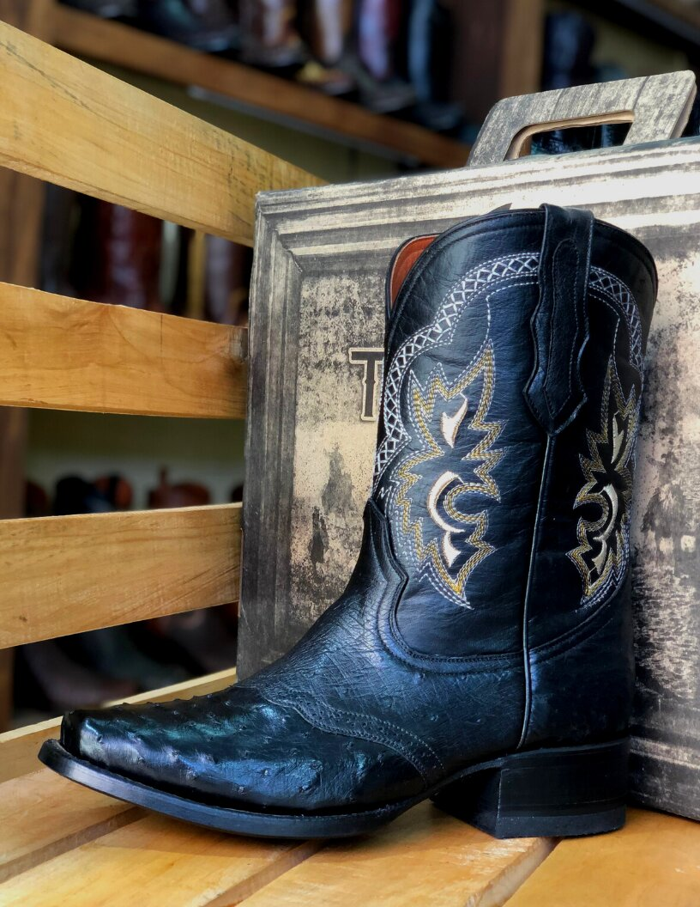
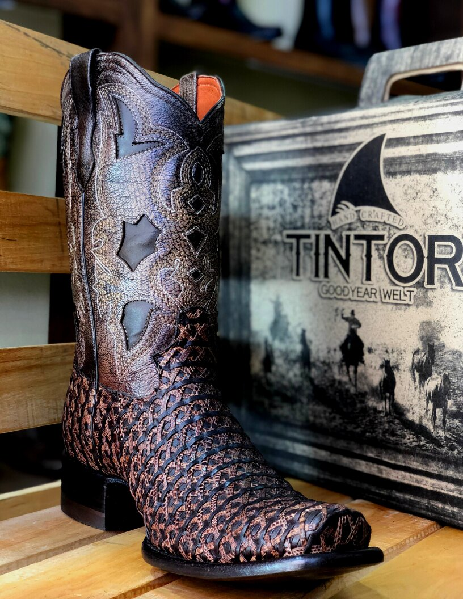
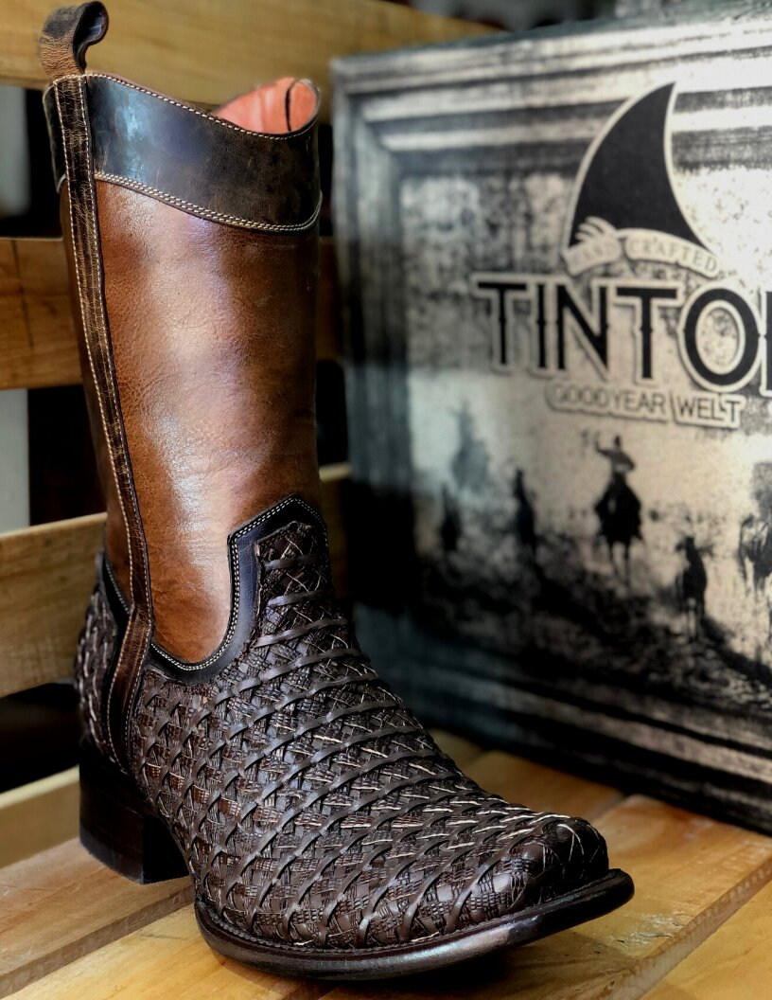

TINTOR BOOTS es una Empresa familiar cien por ciento mexicana, la cual tiene sus orígenes en León Gto.
Cuna del cuero y del calzado, esta marca nace con el propósito de introducir al Mercado productos de calidad y excelente costo,contribuyendo al equilibrio de la fauna de las diferentes especies con las que elaboramos nuestros productos, cumpliendo con la normatividad que requiere cada una de ellas.
Algunos de nuestros productos.


